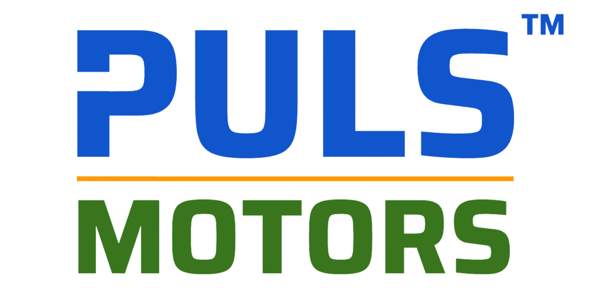
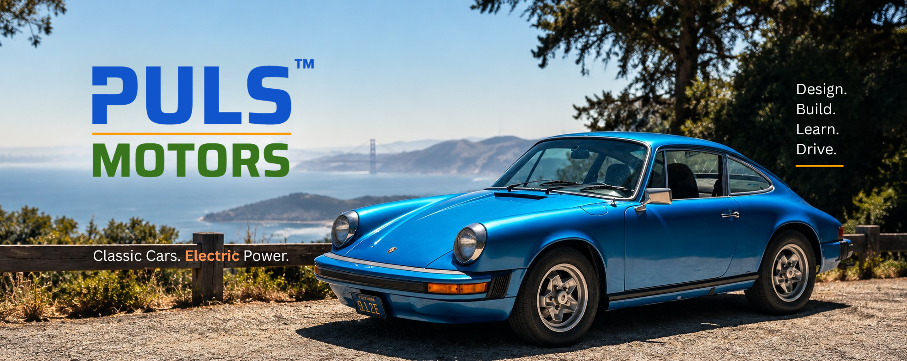
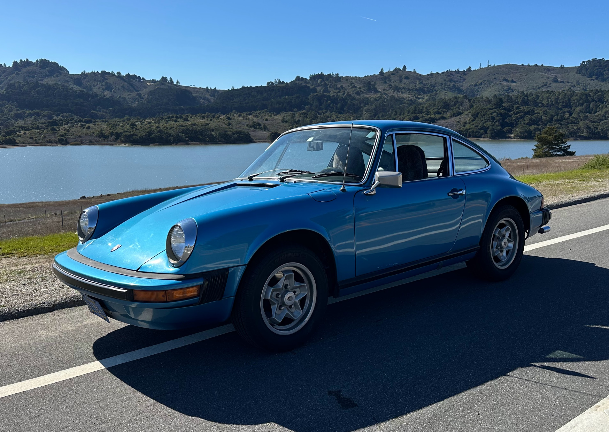
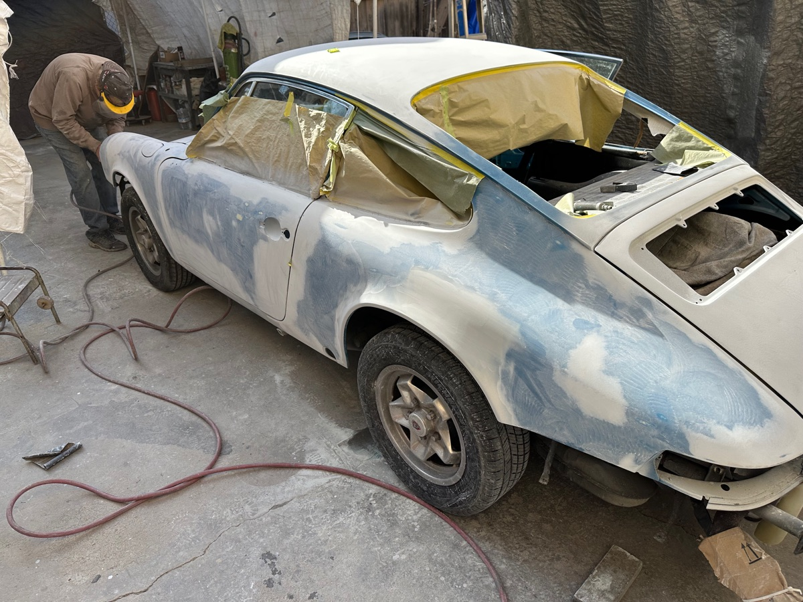
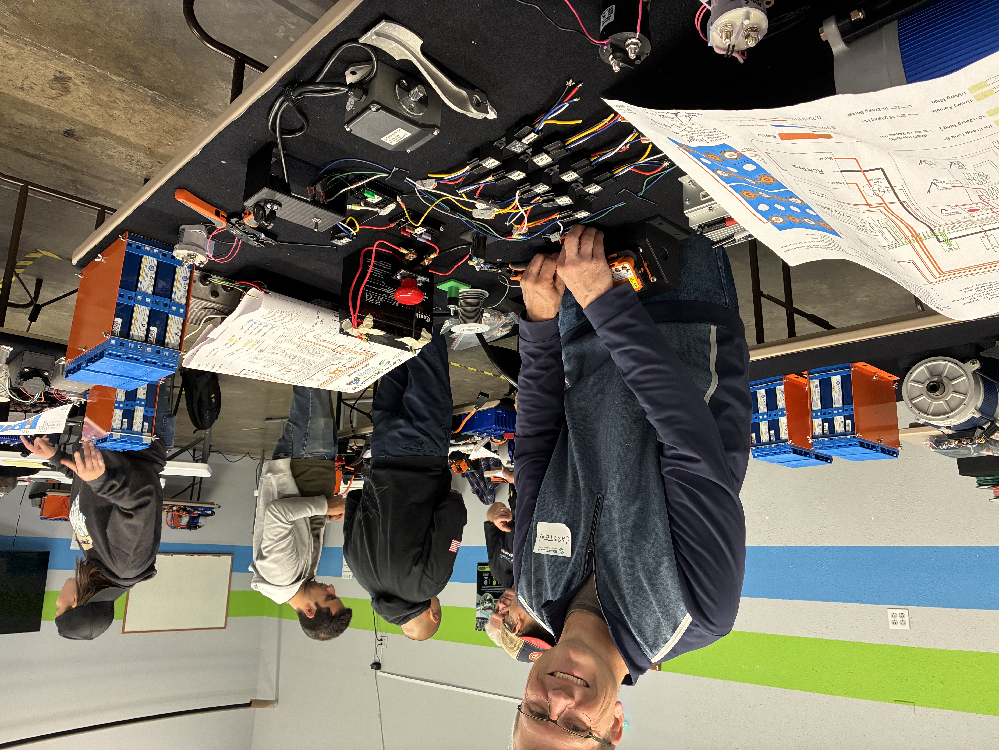
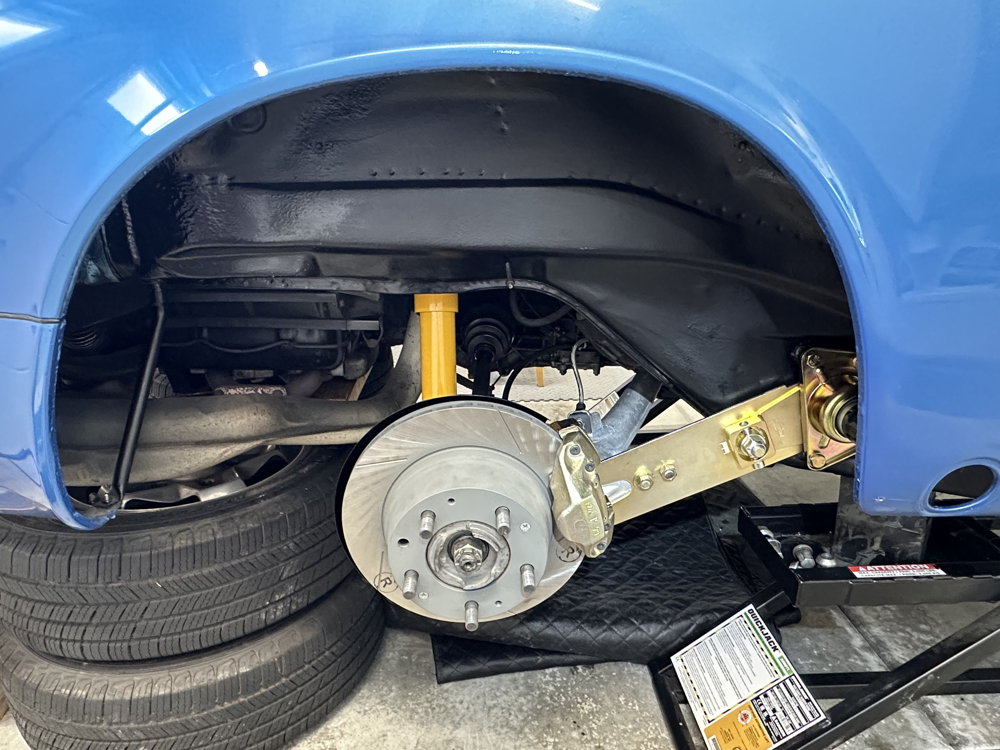
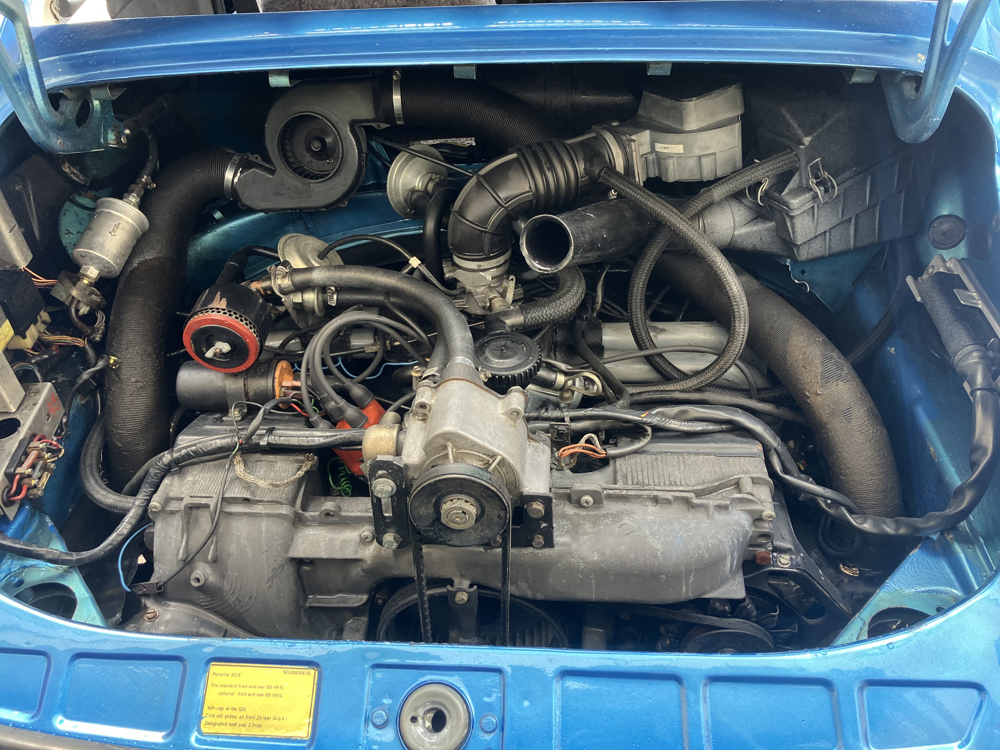
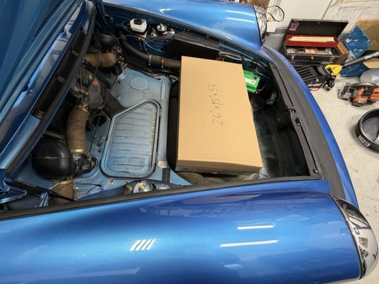
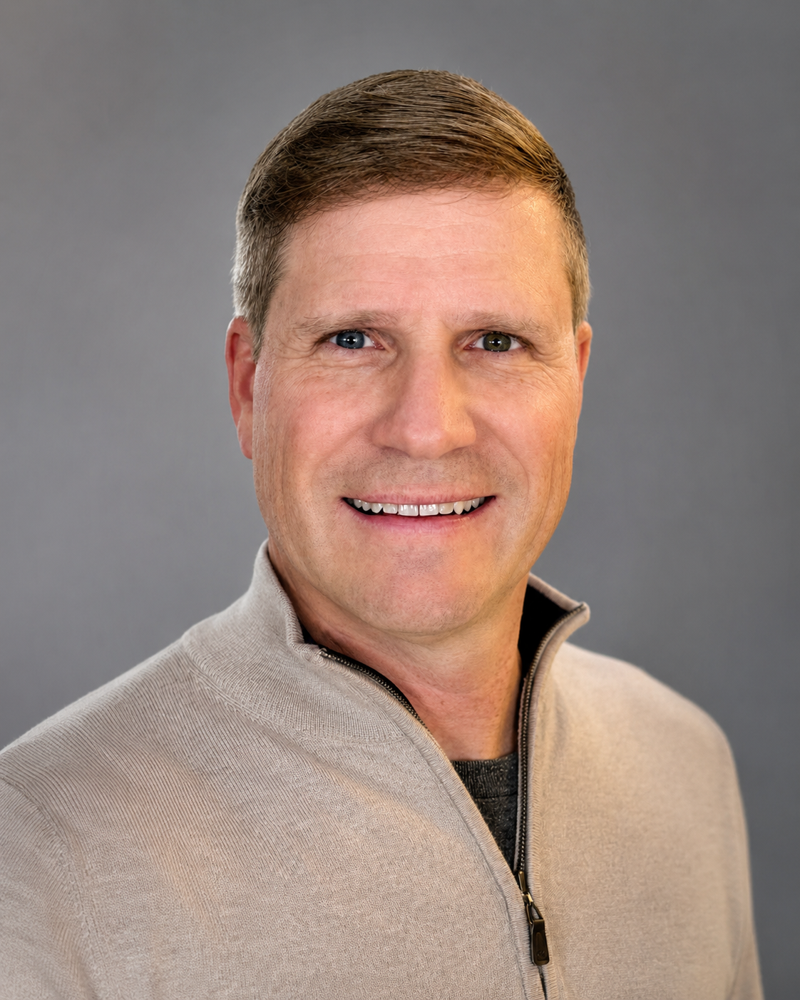

Design
Keep the character of the car. Design choices should fit within the original car's language and feel like they were meant to be there, with a careful balance between old and new.


I'm documenting the electric conversion of my 1976 Porsche 912E in the San Francisco Bay Area - from engineering decisions and component selection through installation, testing and the finished car.
Current project
I am converting my 1976 Porsche 912E to electric power and documenting the build as it happens. The 912E is essentially a four-cylinder Porsche 911, with only 2,099 built for a single model year as a bridge between the 914 and 924. It's the perfect platform for an electric Porsche 911 conversion, and with this project I will show the details along the way, not just the final result. So I'm sharing all the engineering decisions, component selection, packaging, teardown and installation, testing, problems and solutions, and lessons learned.






Approach

Keep the character of the car. Design choices should fit within the original car's language and feel like they were meant to be there, with a careful balance between old and new.
Keep the build hands-on and real: mostly by myself, at home, in a one-car garage. Part of the question is whether a thoughtful EV conversion can be done this way.
Learn from people already doing the work and partner with experts where their experience matters. At the same time, give back by sharing every step with the EV conversion community.
Driving is the fun part, but it is not the end. The car will give its own feedback on what works and what does not, and that will drive new design iterations for this build and future ones.

About
I started Puls Motors as a San Francisco Bay Area project around hands-on electrification, careful documentation and connection with other people interested in the work.
I'm a mechanical/electrical engineer and lifelong builder. I've spent years working with instrumentation, test and measurement, embedded systems, high-performance computing and software - and just as much time taking things apart, restoring them and making them better. More recently, I've focused that curiosity on restoration and electric conversion of classic cars, exploring different approaches, working hands-on, and learning from people already doing the work.
This is where it all comes together: starting with the 912E-lectric project, documenting what I learn, sharing the process, and connecting with others interested in electrification.
Start a conversation